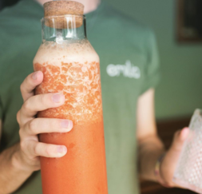
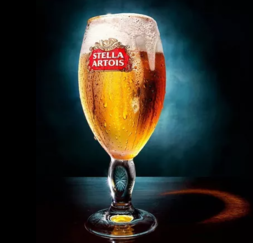
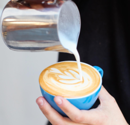
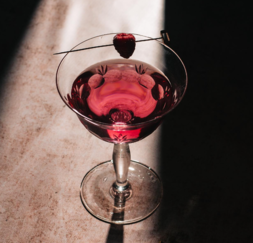

BEBIDAS
La variedad de bebidas es una verdadera celebración para tus sentidos. Desde los ricos y aromáticos cafés espresso y cappuccinos, perfectos para despertar tus mañanas, hasta nuestros refrescantes batidos de frutas y cócteles de café helado que te acompañarán en los días soleados. Nuestra coctelería presenta creaciones originales y clásicos reinventados, ideales para disfrutar en cualquier ocasión. Cada bebida se elabora con esmero y pasión, garantizando que cada sorbo sea una experiencia inolvidable.

Licuados
- Exprimido de Naranja.
- Limonada.
- Kale Manzana Naranja.
- Mango Banana Naranja.
- Pomelada.

Bebidas
- Agua Mineral (con o sin gas).
- Agua Saborizadas.
- Gaseosas.
- Cerveza Heineken 330cc.
- Cerveza Stella Artois 330cc.

Cafés
- Espresso.
- Macchiato.
- Espresso Doble.
- Americano.
- Latte.
- Capuccino.

Coctelería
- Aperol.
- Cynar.
- Gin Tonic.
- Vermú.
- Negroni.
- Caipiroska.